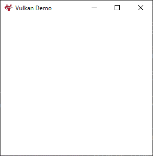
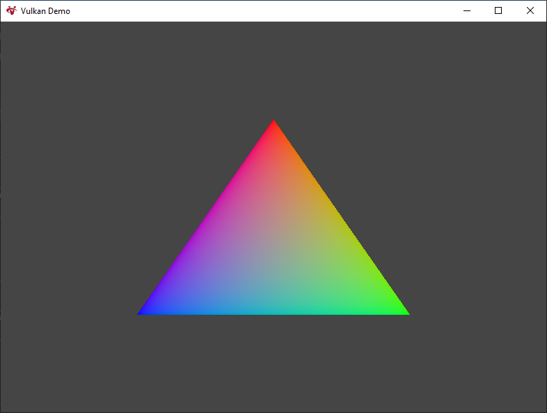
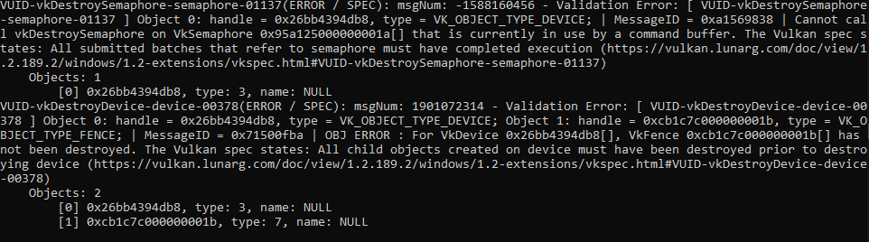

Jorge Segarra
I have a little experience with OpenGL, and after having done a couple of projects with it, I felt confident enough to jump into a modern rendering API.
In this case, I decided to learn Vulkan by doing a small program that renders basic geometry, and I will explain here what I have done and learned.
So, with that said, my first step was to download the Vulkan SDK, yes, it is important 😀. Along with the SDK I downloaded other libraries, projects or tools that will become handy in the future, such as GLM (maths), GENIe(creating development environment) and a logger class I did for our "game engine".
With the development environment set up, the real fun started. My first task was to make a window. I had already used Sokol for that purpose, but for this project I wanted something new, something fresh. GLFW quickly came to my mind followed by win32 window, and belive it or not, I choosed the win32 window instead of the well known and multiplatform GLFW.
Making a window with the win32 API is quite simple. Every window has to be associated with a window class, note that it is not like a C++ class, window classes are a data structure used by the operating system. For making the window class you have to fill a WNDCLASS structure, and then register it by calling RegisterClass function:
// For fully win32 inmersive experience see: WinMain. // Since we are not using WinMain we have to get the instance by our own. HINSTANCE instance = GetModuleHandle(NULL); WNDCLASS window_class = {}; window_class.hInstance = instance; window_class.lpfnWndProc = WindowProc; window_class.lpszClassName = "Main Class"; // Optional field window_class.hIcon = (HICON) LoadImage( instance, "../../data/icon.ico", IMAGE_ICON, 32, 32, LR_LOADFROMFILE ); RegisterClass(&window_class);
As you can see the code is very straightforward, lpfnWndProc field is a pointer to a function which I will explain later. With the window class registered we just have to create the window by calling to CreateWindowEx function:
HWND window = CreateWindowEx(
0,
"Main Class", // Window class
"Vulkan Demo", // Window tittle
WS_OVERLAPPEDWINDOW, // Style
// Window position and size
CW_USEDEFAULT, CW_USEDEFAULT, CW_USEDEFAULT, CW_USEDEFAULT,
NULL, // Parent window
NULL, // Menu
instance, // Instance handle
NULL // Application data
);
Finally, with the window created, we have to show it and make an infinite loop to keep the process running while we will (eventually) show our drawn frames. This is done by calling the function ShowWindow.
ShowWindow(window, 1);
while (running)
{
MSG message;
while (PeekMessage(&message, window, 0, 0, PM_REMOVE))
{
TranslateMessage(&message);
DispatchMessage(&message);
}
// Time to do our stuff!
}
As you may have noticed, there is something more than the ShowWindow function and the loop. Before doing the fun stuff we have to manage all the messages of the application (messages can go from a keystroke to closing or maximizing the window). All those messages are stored in a queue that we can't manipulate directly, but hopefully, for us, we have methods to pull messages from it. That's what we are doing with the function PeekMessage.
The structure retrieved from the queue contains some data, but there is not much we can do with it, therefore, we should translate and dispatch it to the window by calling the functions: TranslateMessage and DispatchMessage. This will trigger the window procedure of the associated window to that message.
LRESULT CALLBACK WindowProc(HWND window, UINT message, WPARAM wParam, LPARAM lParam)
{
LRESULT result = 0;
switch (message)
{
// WINDOW RESIZED
case WM_SIZE: {
break;
}
// WINDOW CLOSED
case WM_CLOSE: {
running = false;
break;
}
default: {
result = DefWindowProc(window, message, wParam, lParam);
break;
}
}
return result;
}
This is how a window procedure could look like, by default we let the default procedure handle the messages, but in specific cases such as the event of closing the window, we handle the message ourselves.
If we have done everything correctly, we should have ended with a window that looks like this. We can move it, resize it or close it, but we are still not drawing on it, so that's what we are going to be doing in the next sections, drawing on our window, and trust me, that it will take long until we finally see something popping out.
The first thing we have to do is create the Vulkan instance, this instance means the connection between our program and the Vulkan library. For doing so, we will have to specify some details about our application by filling a VkApplicationInfo struct.
VkApplicationInfo app_info = {};
app_info.sType = VK_STRUCTURE_TYPE_APPLICATION_INFO;
app_info.pApplicationName = "Vulkan Demo";
app_info.applicationVersion = VK_MAKE_VERSION(1, 0, 0);
app_info.pEngineName = "BadGuy";
app_info.engineVersion = VK_MAKE_VERSION(1, 0, 0);
app_info.apiVersion = VK_API_VERSION_1_2;
In Vulkan, a lot of data is passed through structures instead of parameters, and we will have to fill a lot of these structures. Commonly, those structures have a type field to indicate which type of structure we are dealing with.
So, we will have to fill another structure, this structure will tell Vulkan which general extensions and validation layers we will use.
Vulkan extensions are additional features that Vulkan implementations provide, meanwhile validation layers are optional components that hook into Vulkan function calls to apply additional operations.
Because Vulkan requires you to be very explicit about everything you're doing, it's easy to make many small mistakes and Vulkan has very minimal and limited error checking in the API, it's very recommended to use validation layers.
We will need to add a member or property in the class or wherever we are writing the code to hold the handle of the instance, not just because we will need it in the future but because in Vulkan is important to clean up everything, so every create call corresponds with a destroy and every alloc call with a free.
VkInstance _instance;
Knowing all of that we can start filling the VkInstanceCreateInfo structure to then call vkCreateInstance function. The reality is that we should have some code to check if the implementation supports the extensions and validation layers we want to use, but since it's a quick demo, we won't cover that.
std::vector<char*> extensions = std::vector<char*>();
std::vector<char*> layers = std::vector<char*>();
#ifdef DEBUG
layers.push_back("VK_LAYER_KHRONOS_validation");
extensions.push_back(VK_EXT_DEBUG_UTILS_EXTENSION_NAME);
#endif // DEBUG
VkInstanceCreateInfo create_info = {};
create_info.sType = VK_STRUCTURE_TYPE_INSTANCE_CREATE_INFO;
create_info.pApplicationInfo = &app_info;
create_info.enabledExtensionCount = extensions.size();
create_info.ppEnabledExtensionNames = &(extensions[0]);
create_info.enabledLayerCount = layers.size();
create_info.ppEnabledLayerNames = &(layers[0]);
// CREATING VULKAN INSTANCE
VkResult result = vkCreateInstance(&create_info, nullptr, &_instance);
if (result != VK_SUCCESS) {
LOG_ERROR("Render", "Failed to create Vulkan instance");
return 0;
}
In Vulkan is common that function calls return a VkResult, this is useful to check if the function has gone well or not. Also, note the structure of the function vkCreateInstance, the first parameter is the structure containing the data about what we are creating, then a pointer to an allocator callback that we are not going to use, and finally a pointer to the handle of what we are creating, we will see that a lot of functions in Vulkan follow this structure.
Is important to remember that every create call in Vulkan corresponds with a destroy call and every alloc with a free, and so we have to destroy the instance at the end of the program by calling vkDestroyInstance function:
vkDestroyInstance(_instance, nullptr);
We have now the Vulkan instance but in case that we want to use validation layers (which I really recommend), we will have to set up something more.
The validation layer will print debug messages to the standard output by default, but we can also override that by providing a callback. For that, we will have to set up a debug messenger.
static VKAPI_ATTR VkBool32 VKAPI_CALL debugCallback(
VkDebugUtilsMessageSeverityFlagBitsEXT messageSeverity,
VkDebugUtilsMessageTypeFlagsEXT messageType,
const VkDebugUtilsMessengerCallbackDataEXT* pCallbackData,
void* pUserData) {
switch (messageSeverity)
{
// Diagnostic message.
case VK_DEBUG_UTILS_MESSAGE_SEVERITY_VERBOSE_BIT_EXT: {
break:
}
// Informational message like the creation of a resource.
case VK_DEBUG_UTILS_MESSAGE_SEVERITY_INFO_BIT_EXT: {
LOG_DEBUG("VALIDATION LAYER", pCallbackData->pMessage);
break;
}
// Message about behavior that is not necessarily an error, but very likely a bug in your application.
case VK_DEBUG_UTILS_MESSAGE_SEVERITY_WARNING_BIT_EXT: {
LOG_WARNING("VALIDATION LAYER", pCallbackData->pMessage);
break;
}
// Message about behavior that is invalid and may cause crashes.
case VK_DEBUG_UTILS_MESSAGE_SEVERITY_ERROR_BIT_EXT: {
LOG_ERROR("VALIDATION LAYER", pCallbackData->pMessage);
break;
}
}
return VK_FALSE;
}
This is how a debug callback could look like, see that there are 4 types of message severities and VkDebugUtilsMessengerCallbackDataEXT contains data about the message itself, such as the handles to the Vulkan resources or the message itself as a string. See also that there is a void pointer that can be set up at the moment of setting up the callback and allows you to pass custom data to the callback.
Now it's time to set up the debug messenger itself, it has to be explicitly created and destroyed so we will store it in a class member:
VkDebugUtilsMessengerEXT _debug_messenger;
Now we can start filling up the VkDebugUtilsMessengerCreateInfoEXT:
VkDebugUtilsMessengerCreateInfoEXT debug_create_info = {};
debug_create_info.sType = VK_STRUCTURE_TYPE_DEBUG_UTILS_MESSENGER_CREATE_INFO_EXT;
debug_create_info.messageSeverity =
VK_DEBUG_UTILS_MESSAGE_SEVERITY_VERBOSE_BIT_EXT |
VK_DEBUG_UTILS_MESSAGE_SEVERITY_INFO_BIT_EXT |
VK_DEBUG_UTILS_MESSAGE_SEVERITY_WARNING_BIT_EXT |
VK_DEBUG_UTILS_MESSAGE_SEVERITY_ERROR_BIT_EXT;
debug_create_info.messageType =
VK_DEBUG_UTILS_MESSAGE_TYPE_GENERAL_BIT_EXT |
VK_DEBUG_UTILS_MESSAGE_TYPE_VALIDATION_BIT_EXT |
VK_DEBUG_UTILS_MESSAGE_TYPE_PERFORMANCE_BIT_EXT;
debug_create_info.pfnUserCallback = debugCallback;
debug_create_info.pUserData = nullptr;
The field names speak by themselves but I will quickly explain them, messageSeverity and messageType fields let you filter which severity and type of messages you want to be notified by, pfnUserCallback it's a pointer to the debug callback we have defined before, and finally, pUserData allows you to pass custom data to the callback.
Now we have to call the function vkCreateDebugUtilsMessengerEXT but since it's a function from an extension, is not automatically loaded and we can't call it directly, so, we will have to get a pointer to it by calling the function vkGetInstanceProcAddr:
// Get extension funtion pointer
auto vkCreateDebugUtilsMessengerEXT = (PFN_vkCreateDebugUtilsMessengerEXT)
vkGetInstanceProcAddr(_instance, "vkCreateDebugUtilsMessengerEXT");
// check if it's valid
if (!vkCreateDebugUtilsMessengerEXT) {
LOG_WARNING("Render", "Failed to set up debug messenger");
return;
}
// Create the debug messenger
VkResult result = vkCreateDebugUtilsMessengerEXT(_instance, &debug_create_info, nullptr, &_debug_messenger);
if (result != VK_SUCCESS)
{
LOG_WARNING("Render", "Failed to create debug messenger");
return;
}
Just remember that you will have to destroy in the end, we will have to do the same process of getting the pointer to the function since it is still a function from an extension:
#ifdef DEBUG
auto vkDestroyDebugUtilsMessengerEXT = (PFN_vkDestroyDebugUtilsMessengerEXT)
vkGetInstanceProcAddr(_instance, "vkDestroyDebugUtilsMessengerEXT");
if (vkDestroyDebugUtilsMessengerEXT)
{
vkDestroyDebugUtilsMessengerEXT(_instance, _debug_messenger, nullptr);
}
#endif // DEBUG
With the instance created we need a physical device to work with, so we will add the following class member:
VkPhysicalDevice _physical_device = VK_NULL_HANDLE;
Then we will have to query the available physical devices, we do so by calling the function vkEnumeratePhysicalDevices we will use it twice the first time to query how many devices are and a second time to populate an array of VkPhysicalDevice handles. Finally, we will iterate over it to check if it suits our needs, in this case, we don't need any device extension so we will stick to the first dedicated GPU.
uint32_t count;
std::vector<VkPhysicalDevice> devices;
// Query number of available devices
vkEnumeratePhysicalDevices(_instance, &count, nullptr);
if (count < 1)
{
LOG_ERROR("Render", "Failed to find GPUs with Vulkan support");
return 0;
}
// Query the "real"devices
devices.resize(count);
vkEnumeratePhysicalDevices(_instance, &count, &(devices[0]));
for (size_t i = 0; i < devices.size() && _physical_device == VK_NULL_HANDLE; i++)
{
// Query device properties
VkPhysicalDeviceProperties properties;
vkGetPhysicalDeviceProperties(devices[i], &properties);
// We just want dedicated GPUs
if (properties.deviceType == VK_PHYSICAL_DEVICE_TYPE_DISCRETE_GPU)
{
_physical_device = devices[i];
}
}
Now it's time to speak about queues. In Vulkan, almost any operation like drawing or uploading textures requires to submit commands to queues, and there are different types of queues named queue families, each family of queues has its own set of commands. So now we will have to check if the device supports the queues families that our program requires.
Since we will need a couple of queues in the future and we will use the queues in different points of the program, we will make a struct to store them as a bundle and then create a class member:
struct QueueFamilyIndices
{
int32_t graphics_family = -1;
bool isValid() {
return graphics_family != -1;
}
};
. . . . . . .
QueueFamilyIndices _queue_indices = {};
Ok, some of you may be surprised. The first time I thought that I will be retrieving the queues directly from the driver or something like that, but that's not how it works.
We will retrieve an array with all the queue families that the driver supports, then check if that family supports the operations we want and if so, store the index of that queue in the bundle. That is why it's named QueueFamilyIndices.
Now we just have to query the queues and check for the support of ghrapic commands:
uint32_t count;
std::vector<VkPhysicalDevice> devices;
// Query number of available devices
vkEnumeratePhysicalDevices(_instance, &count, nullptr);
if (count < 1)
{
LOG_ERROR("Render", "Failed to find GPUs with Vulkan support");
return 0;
}
// Query the "real"devices
devices.resize(count);
vkEnumeratePhysicalDevices(_instance, &count, &(devices[0]));
for (size_t i = 0; i < devices.size() && _physical_device == VK_NULL_HANDLE && !_queue_indices.isValid(); i++)
{
VkPhysicalDeviceProperties properties;
vkGetPhysicalDeviceProperties(devices[i], &properties);
// We just want dedicated GPUs
if (properties.deviceType == VK_PHYSICAL_DEVICE_TYPE_DISCRETE_GPU)
{
uint32_t count;
QueueFamilyIndices indices = {};
std::vector<VkQueueFamilyProperties> queues;
// Query count of queue families
vkGetPhysicalDeviceQueueFamilyProperties(devices[i], &count, nullptr);
// Query the queue family properties
queues.resize(count);
vkGetPhysicalDeviceQueueFamilyProperties(devices[i], &count, &(queues[0]));
for (int32_t j = 0; j < count; j++)
{
// Check if the queue supports graphic commands
if (queues[j].queueFlags & VK_QUEUE_GRAPHICS_BIT)
{
indices.graphics_family = j;
}
}
if (indices.isValid())
{
_queue_indices = indices;
_physical_device = devices[i];
LOG_DEBUG("Render", "Running on: %s", properties.deviceName);
}
}
}
Note that the process of querying the queue properties looks like how we retrieved the device properties. Now that we have the physical device it's time to create the logical device.
We will use the logical device to interface with it, and it will become on of the cornerstones of our program. The process is similar to how we created the Vulkan instance, but we will also create the needed queues along the process. So the first step is to add a VkDevice as a class member:
VkDevice _device;
Then we will have to specify the queues we want to create, for doing so, we will fill a VkDeviceQueueCreateInfo structure for every queue family we want to make, this structure describes the number of queues of one family that we will create:
std::vector<VkDeviceQueueCreateInfo> queue_create_infos;
int32_t queues[] = { _queue_indices.graphics_family };
for (size_t i = 0; i < sizeof(queues) / sizeof(queues[0]); i++)
{
float queue_priority = 1.0f;
VkDeviceQueueCreateInfo queue_create_info = {};
queue_create_info.sType = VK_STRUCTURE_TYPE_DEVICE_QUEUE_CREATE_INFO;
queue_create_info.queueCount = 1;
queue_create_info.pQueuePriorities = &queue_priority;
queue_create_info.queueFamilyIndex = queues[i];
queue_create_infos.push_back(queue_create_info);
}
I know what you may be thinking. Right now we are going to create a queue just from one family but in the future, we will need more than one type of queue, so we will need an array of VkDeviceQueueCreateInfo. Vulkan lets you to specify the priority of a queue over the other of the same family, and note that is mandatory even if we are just creating one.
Now we have to specify the device features we will use, we are not going to use any, but even with that, we have to create a VkPhysicalDeviceFeatures structure. These features correspond with the features we could have retrieved with vkGetPhysicalDeviceFeatures when we retrieved the properties of the device:
// Any mandatory features required
VkPhysicalDeviceFeatures device_features = {}; // We don't need any
And finally, we can start to populate the VkDeviceCreateInfo structure and call vkCreateDevice, as you may have guessed.
VkDeviceCreateInfo create_info = {};
create_info.sType = VK_STRUCTURE_TYPE_DEVICE_CREATE_INFO;
create_info.queueCreateInfoCount = (uint32_t) queue_create_infos.size();
create_info.pQueueCreateInfos = queue_create_infos.data();
create_info.pEnabledFeatures = &device_features;
create_info.enabledLayerCount = 0;
create_info.ppEnabledLayerNames = nullptr;
create_info.enabledExtensionCount = 0;
create_info.ppEnabledExtensionNames = nullptr;
VkResult result = vkCreateDevice(_physical_device, &create_info, nullptr, &_device);
if (result != VK_SUCCESS)
{
LOG_ERROR("Render", "Failed to create logical device!");
return 0;
}
Note that we can specify the device extensions and layers we want to use, since we are not using any we can leave them in the default value (0). Then we have to fill the number of different queue families we are creating and the pointers to the structures we previously prepared. And remember, always clean your room program before exiting.
vkDestroyDevice(_device, nullptr);
The last step is to retrieve the VkQueue handle. First, we will create a class member to store it and then retrieve the queue by calling the function vkGetDeviceQueue. The good point about queues is that is not necessary to clean them up since they will be cleaned for you when the device they belong to is destroyed.
VkQueue _graphics_queue; . . . . . . . . vkGetDeviceQueue(_device, _queue_indices.graphics_family, 0, &_graphics_queue);
We will use the index 0 since we just have one queue. Now that we have the logical device, we can start to do things with our graphic card, but it will take us hundreds of lines of code more.
Vulkan is not a platform-specific API, so it can't interface directly with our window by default. To present results in our window we will need to establish a connection between Vulkan and it by using an extension (VK_KHR_surface). This extension exposes a VkSurfaceKHR object is used to present our rendered images. Since VK_KHR_surface extension is also platform agnostic we will need another extension on top of that, VK_KHR_win32_surface in this case since we are using the win32 window.
So let's start by adding a class member of type VkSurfaceKHR.
VkSurfaceKHR _surface;
Then we will have to fill the VkWin32SurfaceCreateInfoKHR structure and call to the appropriate create function. For accessing platform-specific functions we will use #define VK_USE_PLATFORM_WIN32_KHR, otherwise, we won't have access to that structure and function.
VkWin32SurfaceCreateInfoKHR create_info = {};
create_info.sType = VK_STRUCTURE_TYPE_WIN32_SURFACE_CREATE_INFO_KHR;
create_info.hwnd = window; // win32 Window handle
create_info.hinstance = instance; // Process handle
VkResult result = vkCreateWin32SurfaceKHR(_instance, &create_info, nullptr, &_surface);
if (result != VK_SUCCESS)
{
LOG_ERROR("Render", "Failed to create window surface");
return 0;
}
And remember to call to the apropiate destroy function at the end of the program.
vkDestroySurfaceKHR(_instance, _surface, nullptr);
Now we will have to add the extension to the Vulkan implementation, for doing so we just have to specify the extension names where we created the VkInstance.
extensions.push_back(VK_KHR_SURFACE_EXTENSION_NAME);
extensions.push_back("VK_KHR_win32_surface");
Now we will have to create the presentation queue since our graphics queue does not support presentation commands.
The first step will be to modify our QueueFamilyIndices structure to add another index, at the end is possible that one queue family supports both types of commands but it is also possible that it doesn't, so we will add a new field to the structure.
struct QueueFamilyIndices
{
int32_t graphics_family = -1;
int32_t present_family = -1;
bool isValid() {
return graphics_family != -1 && present_family != -1;
}
};
Next, we will have to check for every queue family if it supports presenting to our window surface by calling the function vkGetPhysicalDeviceSurfaceSupportKHR.
. . . .
// Check if the queue supports graphic commands
if (queues[j].queueFlags & VK_QUEUE_GRAPHICS_BIT)
{
indices.graphics_family = j;
}
VkBool32 present_support = false;
vkGetPhysicalDeviceSurfaceSupportKHR(devices[i], j, _surface, &present_support);
if (present_support)
{
indices.present_family = j;
}
. . . .
Finally, we will have to add a new class member to store the handle of our new queue and then retrieve it after the creation of the logical device.
VkQueue _graphics_queue; VkQueue _present_queue; . . . . vkGetDeviceQueue(_device, _queue_indices.graphics_family, 0, &_graphics_queue); vkGetDeviceQueue(_device, _queue_indices.present_family, 0, &_present_queue);
Now, we have the instance, device and the surface, but we are still missing a primordial for being able to present our rendered frames to the window, this is, the swap chain.
And this is due that Vulkan does not knowns the concept of a "default framebuffer" (in contrast with OpenGL), indeed we will have to create something that owns the buffers we will draw into to then visualize them. This is called swap chain and there is no "default swap chain" we will have to create it manually. The swap chain is in essence a queue of images that are waiting to be presented, we will be acquiring them, drawing to them and then returning back to the queue.
So let's start by typing some code. The first step should be to check if the device supports presenting images but we will skip that part and assume that our graphic card can do it. Then we will have to enable the VK_KHR_SWAPCHAIN_EXTENSION_NAME that is a device extension, yes, a device extension, we have enabled two extensions but those were global extensions, in this case, we will have to do it in the process of creating the logical device by changing a bit the create info structure:
std::vector<char*> device_extensions = { VK_KHR_SWAPCHAIN_EXTENSION_NAME };
create_info.enabledExtensionCount = device_extensions.size();
create_info.ppEnabledExtensionNames = device_extensions.data();
Once we have that we will need to check for the details of the swap chain support, we will need them and a bunch of data structures in order to create the swap chain. These details are:
- Surface capabilities: min/max number of images in the swap chain, min/max width and height.
- Surface formats: pixel format and color space.
- Presentations modes: defines the conditions for showing images to the screen.
So we will start by retrieving the surface capabilities by calling the function vkGetPhysicalDeviceSurfaceCapabilitiesKHR. You should be starting to notice a pattern here, we use functions with get in the name when we need to query or retrieve information about something. And create or destroy for creating and destroying resources.
VkSurfaceCapabilitiesKHR capabilities; vkGetPhysicalDeviceSurfaceCapabilitiesKHR(_physical_device, _surface, &capabilities);
We will use the data retrieved later, now we have to continue by querying the available formats of the surface, and for the surprise of anybody, we will have to call twice to the function vkGetPhysicalDeviceSurfaceFormatsKHR because we are retrieving a list:
uint32_t count;
std::vector<VkSurfaceFormatKHR> available_formats;
vkGetPhysicalDeviceSurfaceFormatsKHR(_physical_device, _surface, &count, nullptr);
if (count != 0)
{
available_formats.resize(count);
vkGetPhysicalDeviceSurfaceFormatsKHR(_physical_device, _surface, &count, available_formats.data());
}
2 out of 3, we are just missing one thing, yes, you have guessed it, we will have to get the supported presentation modes. As the ritual follows we will call twice to the function vkGetPhysicalDeviceSurfacePresentModesKHR to query the list of presentation modes:
uint32_t count;
std::vector<VkPresentModeKHR> available_present_modes;
vkGetPhysicalDeviceSurfacePresentModesKHR(_physical_device, _surface, &count, nullptr);
if (count != 0)
{
available_present_modes.resize(count);
vkGetPhysicalDeviceSurfacePresentModesKHR(_physical_device, _surface, &count, available_present_modes.data());
}
With all the data in order, we can start to pick the format and presentation mode we will use in our swap chain.
We will start by filtering the format, for doing so we will have to iterate over all the retrieved VkSurfaceFormatKHR and check the format and colorSpace fields. Format means color channels and bit size of every component, for example we will be looking for this format VK_FORMAT_B8G8R8A8_SRGB, this means that we are looking for channels B, G, R, A in that order with 8 bit component each. Color space indicates if SRGB is supported or not by using the flag VK_COLOR_SPACE_SRGB_NONLINEAR_KHR. SRGB and linear space colors is a highly discussed topic, I suggest you to familiarize with it if you are not already.
VkSurfaceFormatKHR surface_format = available_formats[0];
for (size_t i = 0; i < available_formats.size(); i++)
{
if (available_formats[i].format == VK_FORMAT_B8G8R8A8_SRGB &&
available_formats[i].colorSpace == VK_COLOR_SPACE_SRGB_NONLINEAR_KHR) {
surface_format = available_formats[i];
}
}
As you see, we will use the first format available if the one that we want is not among the supported formats. But otherwise, we will use the preferred one.
Let's speak about presentation modes before continuing, they define the conditions to show images to the screen and there are four possible modes:
VK_PRESENT_MODE_IMMEDIATE_KHR: Images are transferred to the screen as soon as they are submitted. This may result in tearing.VK_PRESENT_MODE_FIFO_KHR: The swap chain is a queue, every time that the display is refreshed an image is taken away from the head, the program inserts images at the tail. If the queue is full the program must wait. The moment of refresh is known as "vertical blank" and is well known as vertical sync.VK_PRESENT_MODE_FIFO_RELAXED_KHR: This mode is similar to the previous one, but if the program was late and the queue was empty at the moment of the refresh, instead of waiting for the next vertical blank the new image is transferred to the screen right away once it finally arrives. Which can result in tearing, as the first mode.VK_PRESENT_MODE_MAILBOX_KHR: This is another variation of the second mode. When the queue is full, instead of blocking the program, the images from the queue get replaced by the new ones. This mode allows you to keep rendering frames while still avoiding tearing, this is well known as "triple buffering".
Now, the smart guy, should expect that we are doing something similar to what we did with the formats for the presentation mode, and yes, you are correct. We will try to use the one that we want but if it's not available we will use VK_PRESENT_MODE_FIFO_KHR because is the only one that is guaranteed to be always available:
VkPresentModeKHR surface_present_mode = VK_PRESENT_MODE_FIFO_KHR;
for (size_t i = 0; i < available_present_modes.size(); i++)
{
if (available_present_modes[i] == VK_PRESENT_MODE_MAILBOX_KHR)
{
surface_present_mode = available_present_modes[i];
}
}
This leaves us with just one more thing to do before being able to create the swap chain, and that's, choosing the swap chain extent.
The swap extent is the resolution of the swap chain images and it's equal to the resolution of the window. The range of possible resolutions is given in the structure VkSurfaceCapabilitiesKHR that we have previously retrieved. Some window managers allow us to specify our own resolution by setting the currentExtent field to UINT32_MAX, in that case, we will pick the resolution that matches the resolution of our window.
// win32 specific code
// We can query the client size (window size - the space used for the top bar) of the window
RECT rect;
GetClientRect(_window // Window handle, &rect);
int width = rect.right - rect.left;
int height = rect.bottom - rect.top;
VkExtent2D surface_extent = { (uint32_t) width, (uint32_t) height };
if (capabilities.currentExtent.width != UINT32_MAX)
{
surface_extent = capabilities.currentExtent;
}
else
{
surface_extent.width = glm::clamp(surface_extent.width, capabilities.minImageExtent.width, capabilities.maxImageExtent.width);
surface_extent.height = glm::clamp(surface_extent.height, capabilities.minImageExtent.height, capabilities.maxImageExtent.height);
}
This one was easy, just note that we have used win32 API code here to get the window client size, you may need to use something different in case that you are using another window system. Also, note that we have clamped the size to the minimum and maximum supported.
Now we can start to create the swap chain, but before, we should decide how many images we would like to have in the swap chain, the capabilities specify the minimum and the maximum number of images the surface supports. Just sticking to the minimum could work but that could mean that we have to wait sometimes for the driver, so it's recommended to use the minimum + 1 at least:
uint32_t image_count = capabilities.minImageCount + 1;
if (capabilities.maxImageCount != 0 && image_count > capabilities.maxImageCount)
{
image_count = capabilities.maxImageCount;
}
As we all know, creating Vulkan objects means filling large and boring structures, and then calling a function, and that's exactly what we will do for the swap chain:
VkSwapchainCreateInfoKHR create_info = {};
create_info.sType = VK_STRUCTURE_TYPE_SWAPCHAIN_CREATE_INFO_KHR;
create_info.imageUsage = VK_IMAGE_USAGE_COLOR_ATTACHMENT_BIT;
create_info.compositeAlpha = VK_COMPOSITE_ALPHA_OPAQUE_BIT_KHR;
create_info.preTransform = capabilities.currentTransform;
create_info.imageArrayLayers = 1;
create_info.clipped = VK_TRUE;
create_info.oldSwapchain = VK_NULL_HANDLE;
uint32_t queue_family_indices[] = { _queue_indices.graphics_family, _queue_indices.present_family };
if (_queue_indices.graphics_family != _queue_indices.present_family)
{
// VK_SHARING_MODE_EXCLUSIVE should be better for performance
create_info.imageSharingMode = VK_SHARING_MODE_CONCURRENT;
create_info.queueFamilyIndexCount = sizeof(queue_family_indices) / sizeof(queue_family_indices[0]);
create_info.pQueueFamilyIndices = queue_family_indices;
}
else
{
create_info.imageSharingMode = VK_SHARING_MODE_EXCLUSIVE;
create_info.queueFamilyIndexCount = 0;
create_info.pQueueFamilyIndices = nullptr;
}
// Handles of the surface and data we just got. They don't need more explanation than this.
create_info.surface = _surface;
create_info.minImageCount = image_count;
create_info.imageFormat = surface_format.format;
create_info.imageColorSpace = surface_format.colorSpace;
create_info.imageExtent = surface_extent;
create_info.presentMode = surface_present_mode;
Alright, this one was not that boring, we have some interesting and tricky fields here.
imageUsage: specifies what kind of operations we will use with the images of the swap chain. Since we will be rendering directly to them we will use theVK_IMAGE_USAGE_COLOR_ATTACHMENT_BIT, there is also another optionVK_IMAGE_USAGE_TRANSFER_DST_BITthat allows you to transfer to the swap chain a rendered image, this is useful in case that you want to make some post-processing before presenting the rendered image to the window.compositeAlpha: Describes if the alpha channel should be used for blending with other windows in the window system. You'll almost always want to simply ignore the alpha channel, henceVK_COMPOSITE_ALPHA_OPAQUE_BIT_KHR.preTransform: This allows you to aply a trasformation to the images of the swap chain. For example, 90 degree rotation or horizontal flip. For doing this, it has to be supported in the capabilities of the surface, indicated in the fieldsupportedTransforms. Since we don't want any transformation we will use the current transformation that is equal to any transformation.imageArrayLayers: Specifies the number of layers each image consists of. And should be always 1 unless you are developing a VR application.clipped: If it's true it will mean that we don't care about the pixels that are obscured by another window. This can save some performance if you don't need those pixels.oldSwapchain: It's posible that your swap chain becomes invalid, for example, in the event of changing the size of the window. In that case, we will need to create a new swap chain from scratch. In that case we will need to reference the old swap chain in this field. In the end, you should be able to do this on your own, so I won't be covering this topic of recreating the swap chain.imageSharingMode: This describes how we will handle swap chain images that will be used by different queue families. This can happen if the graphics queue is from a different family than the presentation queue. And we have two ways of handling them:VK_SHARING_MODE_EXCLUSIVE: The image is owned by one queue family and the ownership must be explicitly transferred in order to use it in another queue. This option should be better for performance but I won't cover this topic, however, we can use it if our both queues are from the same family.VK_SHARING_MODE_CONCURRENT: The images can be used by different queue families without transferring the ownership explicitly. For using this mode you must tell in advance from which queues families the images will be used (pQueueFamilyIndices), and how many queues will be (queueFamilyIndexCount).
With everything covered, we can now create the swap chain after adding the appropriate VkSwapchainKHR class member and then calling to the function vkCreateSwapchainKHR.
VkSwapchainKHR _swapchain;
Creating the VkSwapchainKHR class member.
VkResult result = vkCreateSwapchainKHR(_device, &create_info, nullptr, &_swapchain);
if (result != VK_SUCCESS)
{
LOG_ERROR("Render", "Failed to create SwapChain");
return 0;
}
Calling the vkCreateSwapchainKHR function.
vkDestroySwapchainKHR(_device, _swapchain, nullptr);
Destroying the swap chain at the end of the program
Our swap chain is created now and ready to use, but we still need to get the references to the handles of the VkImage from the swap chain. We will need those in the future and we are at the right place in the right moment to get them, so let's start typing.
We need a new class member to store the handles, and since they were created automatically by the implementation we are not responsible for them, so they will be cleaned up for us when the swap chain is destroyed.
std::vector<VkImage> _swapchain_images;
We will have to call the function vkCreateSwapchainKHR, as we have seen before, since we are retrieving an array of data, we will call it twice, the first time to get the number and the second time to get the actual data.
vkGetSwapchainImagesKHR(_device, _swapchain, &image_count, nullptr); _swapchain_images.resize(image_count); vkGetSwapchainImagesKHR(_device, _swapchain, &image_count, _swapchain_images.data());
Ok, we have the VkImage from the swap chain, but in Vulkan, we need a VkImageView in order to use any VkImage, so the last step will be to create one VkImageView per VkImage. A VkImageView describes how the image is accessed and which part of the image will be accessed. You will understand it better with the code 😀.
So the first step as always, will be to add a new class member to the behemoth we are slowly creating:
std::vector<VkImageView< _swapchain_image_views;
Now, it's time to do what we love doing, filling a structure and then calling to the appropriate create function. As we have seen we will need a VkImageView per VkImage, so let's start by doing a loop:
_swapchain_image_views.resize(image_count);
for (uint32_t i = 0; i < image_count; i++)
{
VkImageViewCreateInfo create_info = {};
create_info.sType = VK_STRUCTURE_TYPE_IMAGE_VIEW_CREATE_INFO;
create_info.viewType = VK_IMAGE_VIEW_TYPE_2D;
create_info.image = _swapchain_images[i];
create_info.format = surface_format.format;
}
viewType allows you to define if it's a 1D, 2D, 3D or cube map. image and format fields are very straightforward.
create_info.components.r = VK_COMPONENT_SWIZZLE_IDENTITY; create_info.components.g = VK_COMPONENT_SWIZZLE_IDENTITY; create_info.components.b = VK_COMPONENT_SWIZZLE_IDENTITY; create_info.components.a = VK_COMPONENT_SWIZZLE_IDENTITY;
The components field lets you change the channels of the image. For example by mapping all the channels to the red component or by setting the component to a constant value of 1 or 0.
create_info.subresourceRange.aspectMask = VK_IMAGE_ASPECT_COLOR_BIT; create_info.subresourceRange.baseMipLevel = 0; create_info.subresourceRange.levelCount = 1; create_info.subresourceRange.baseArrayLayer = 0; create_info.subresourceRange.layerCount = 1;
subresourceRange field specifies the purpose of the image and which part of the image will be accessed, we will use it as a color target without any mip map.
We just have to call the appropriate vkCreateImageView function. Since we are creating them explicitly, it will be our duty to clean them at the end of the program.
VkResult result = vkCreateImageView(_device, &create_info, nullptr, &(_swapchain_image_views[i]));
if (result != VK_SUCCESS)
{
LOG_DEBUG("Render", "Failed creating image view %d", i);
return 0;
}
. . . . .
// End of the program
for (size_t i = 0; i < _swapchain_image_views.size(); i++)
{
vkDestroyImageView(_device, _swapchain_image_views[i], nullptr);
}
Congratulations, for reaching this point, but we are still far away from drawing our first triangle, the next steps are probably the most important ones. We will be creating our graphic pipeline. Please, if you are not familiar with the topic, stop here and read a bit about it.
In resume, in Vulkan, we have to program and configure the different stages of the pipeline. Unlike other rendering APIs such as OpenGL, we will have to be very specific on what is happening, we don't have default cull mode, blend mode and function.
So, we will start by creating the shader stages of the pipeline. In Vulkan we can create shaders for tessellation and geometry stages, those stages are optional and we don't need them, so we will stick to the Vertex and Fragment stages.
So let's start typing some GLSL code, no?, well, yes but no, in Vulkan the code of the shaders has to be fed in in bytecode called SPIR-V, luckily for us, we can write the code in GLSL as we would do normally, then compile it to bytecode with the glslc.exe compiler that is provided to you in the Vulkan SDK.
Now, let's make the vertex shader.
#version 450
layout(location = 0) in vec2 position;
layout(location = 1) in vec3 color;
layout(location = 0) out vec3 vertexColor;
void main() {
vertexColor = color;
gl_Position = vec4(position, 0.0, 1.0);
}
That's how our shader will look, note that we will pass two vertex attributes to the shader, color and position, we will then pass the color to the fragment shader.
Now, time to see that fragment shader.
#version 450
layout(location = 0) in vec3 vertexColor;
layout(location = 0) out vec4 outColor;
void main() {
outColor = vec4(vertexColor, 1.0);
}
Voilà, this one was simple.
Now that we have our shaders I suggest you to make a compile.bat file.
C:/VulkanSDK/version/Bin32/glslc.exe shader.vert -o vert.spv C:/VulkanSDK/version/Bin32/glslc.exe shader.frag -o frag.spv PAUSE
Now that we have the shaders in byte code, it's time for us to read the files in our program, I won't cover that, but you should be able to do it by yourself.
std::vector<char> vertex_shader_code = Utils::readFile("../../shaders/vert.spv");
std::vector<char> fragment_shader_code = Utils::readFile("../../shaders/frag.spv");
Now that we have read the content of our shaders, we have to create a VkShaderModule for each shader stage we will create.
VkShaderModule vertex_shader_module = createShaderModule(vertex_shader_code); VkShaderModule fragment_shader_module = createShaderModule(fragment_shader_code);
I will show you what is inside the createShaderModule function.
VkShaderModule Render::createShaderModule(const std::vector<char>& code) const
{
VkShaderModuleCreateInfo create_info = {};
create_info.sType = VK_STRUCTURE_TYPE_SHADER_MODULE_CREATE_INFO;
create_info.codeSize = code.size();
create_info.pCode = (const uint32_t*) code.data();
VkShaderModule shader_module = {};
VkResult result = vkCreateShaderModule(_device, &create_info, nullptr, &shader_module);
if (result != VK_SUCCESS)
{
LOG_ERROR("Render", "Failed creating shader module");
return VkShaderModule();
}
return shader_module;
}
As you see, we just need to specify the size in bytes of the code and the code itself for creating a shader module.
vkDestroyShaderModule(_device, vertex_shader_module, nullptr); vkDestroyShaderModule(_device, fragment_shader_module, nullptr);
Since we have created the shader modules resources we will have to clean them. Is not necessary to wait until the end of the program to destroy them, we can do it after we finish creating our graphic pipeline.
As you may have noticed, these shader modules don't contain any information regarding shader type, so that's why we will use them to fill a VkPipelineShaderStageCreateInfo struct. Instead of using these structs to call a create function, we will have to feed them into another struct later.
VkPipelineShaderStageCreateInfo vertex_stage_create_info = {};
vertex_stage_create_info.sType = VK_STRUCTURE_TYPE_PIPELINE_SHADER_STAGE_CREATE_INFO;
vertex_stage_create_info.stage = VK_SHADER_STAGE_VERTEX_BIT;
vertex_stage_create_info.module = vertex_shader_module;
vertex_stage_create_info.pName = "main";
Creating the fragment shader stage is as easy as changing the type to VK_SHADER_STAGE_FRAGMENT_BIT. Now, lets make an array with the stages, we will use it later to fill another struct.
VkPipelineShaderStageCreateInfo shader_stages[] = { vertex_stage_create_info, fragment_stage_create_info };
Now, we will create a VkPipelineVertexInputStateCreateInfo structure. This one will describe the format of the data we will pass to the vertex shader stage. It's made of 2 substructures:
VkVertexInputBindingDescription: This one defines if the data is per vertex or instance and the space between data.VkVertexInputAttributeDescription: This struct specifies the format of the data, the location, the binding to load it from and the offset inside the binding.
Let's start with the VkVertexInputBindingDescription structure.
VkVertexInputBindingDescription positions_binding_description = {};
positions_binding_description.binding = 0;
positions_binding_description.stride = sizeof(glm::vec2);
positions_binding_description.inputRate = VK_VERTEX_INPUT_RATE_VERTEX;
VkVertexInputBindingDescription colors_binding_description = {};
colors_binding_description.binding = 1;
colors_binding_description.stride = sizeof(glm::vec3);
colors_binding_description.inputRate = VK_VERTEX_INPUT_RATE_VERTEX;
VkVertexInputBindingDescription bindings[] = { positions_binding_description, colors_binding_description };
We still don't know about buffers but note that I have created two bindings, this is because I will be storing the vertex attribute data in two different buffers for the shake of it. This is not necessary at all, and doing it with just one binding is as easy as this:
VkVertexInputBindingDescription vertex_binding_description = {};
positions_binding_description.binding = 0;
positions_binding_description.stride = sizeof(glm::vec2) + sizeof(glm::vec3);
positions_binding_description.inputRate = VK_VERTEX_INPUT_RATE_VERTEX;
Now, let me explain the fields. binding defines the binding number. stride specifies the space between one attribute data to the next one. Finally, inputRate defines if the data is per vertex or per instance, we are not using instancing so we will stick to VK_VERTEX_INPUT_RATE_VERTEX.
Let's take a look at the attribute description structures.
kVertexInputAttributeDescription positions_attribute_description = {};
positions_attribute_description.binding = 0;
positions_attribute_description.location = 0;
positions_attribute_description.offset = 0;
positions_attribute_description.format = VK_FORMAT_R32G32_SFLOAT;
VkVertexInputAttributeDescription colors_attribute_description = {};
colors_attribute_description.binding = 1;
colors_attribute_description.location = 1;
colors_attribute_description.offset = 0;
colors_attribute_description.format = VK_FORMAT_R32G32B32_SFLOAT;
VkVertexInputAttributeDescription attributes[] = { positions_attribute_description, colors_attribute_description };
We have to create two structures because we will have two different attributes, hence, we have to describe them. The fields here are very straightforward. The format specifies the format of the attribute data. The binding describes from which binding that data comes from. The location specifies the location of the attribute. The offset describes the offset from each binding data to reach the attribute data.
As we have seen, in the case of having just one buffer, hence, one binding we would still have two attribute descriptors, but we will have to do a slight change.
kVertexInputAttributeDescription positions_attribute_description = {};
positions_attribute_description.binding = 0;
positions_attribute_description.location = 0;
positions_attribute_description.offset = 0;
positions_attribute_description.format = VK_FORMAT_R32G32_SFLOAT;
VkVertexInputAttributeDescription colors_attribute_description = {};
colors_attribute_description.binding = 0;
colors_attribute_description.location = 1;
colors_attribute_description.offset = sizeof(glm::vec2);
colors_attribute_description.format = VK_FORMAT_R32G32B32_SFLOAT;
VkVertexInputAttributeDescription attributes[] = { positions_attribute_description, colors_attribute_description };
Now that we have the bindings and descriptors we can start with the real deal, the VkPipelineVertexInputStateCreateInfo. This one is very easy, we just have to fill it we the structures we have just created, telling how many descriptors and bindings we have and adding the pointer to them.
VkPipelineVertexInputStateCreateInfo vertex_input_info = {};
vertex_input_info.sType = VK_STRUCTURE_TYPE_PIPELINE_VERTEX_INPUT_STATE_CREATE_INFO;
vertex_input_info.vertexBindingDescriptionCount = sizeof(bindings) / sizeof(bindings[0]);
vertex_input_info.pVertexBindingDescriptions = bindings;
vertex_input_info.vertexAttributeDescriptionCount = sizeof(attributes) / sizeof(attributes[0]);;
vertex_input_info.pVertexAttributeDescriptions = attributes;
Then we will create a VkPipelineInputAssemblyStateCreateInfo, this struct allows us to define what type of topology we will draw and if primitive restart is enabled. Primitive restart allows us to break lines and triangles.
VkPipelineInputAssemblyStateCreateInfo input_assembly = {};
input_assembly.sType = VK_STRUCTURE_TYPE_PIPELINE_INPUT_ASSEMBLY_STATE_CREATE_INFO;
input_assembly.topology = VK_PRIMITIVE_TOPOLOGY_TRIANGLE_LIST;
input_assembly.primitiveRestartEnable = VK_FALSE;
We are not going to use primitive restart, and since we want to draw a triangle we will stick to VK_PRIMITIVE_TOPOLOGY_TRIANGLE_LIST, but we could use VK_PRIMITIVE_TOPOLOGY_POINT_LIST to draw points from vertices, there are also more options.
Now, let's define our viewport by filling a VkViewport struct, it basically describes the region of the framebuffer that the output will be rendered to. Before, I recommend to you to store the extent and format of the swap chain as class members now because we will need them.
VkViewport viewport = {};
viewport.x = 0.0f;
viewport.y = 0.0f;
viewport.width = _swapchain_extent.width;
viewport.height = _swapchain_extent.height;
viewport.minDepth = 0.0f;
viewport.maxDepth = 1.0f;
We have the option to define our scissor rectangle now, but since we want the full image we will cover all the screen with it.
VkRect2D scissor = {};
scissor.offset = { 0, 0 };
scissor.extent = _swapchain_extent;
Now we will combine the viewport and scissor into a VkPipelineViewportStateCreateInfo structure.
VkPipelineViewportStateCreateInfo viewport_info = {};
viewport_info.sType = VK_STRUCTURE_TYPE_PIPELINE_VIEWPORT_STATE_CREATE_INFO;
viewport_info.viewportCount = 1;
viewport_info.pViewports = &viewport;
viewport_info.scissorCount = 1;
viewport_info.pScissors = &scissor;
We will have to configure the rasterizer. It is the part of the pipeline that takes the geometry from the vertex shader to turn it into fragments that can be colored by our fragment shader.
VkPipelineRasterizationStateCreateInfo rasterizer = {};
rasterizer.sType = VK_STRUCTURE_TYPE_PIPELINE_RASTERIZATION_STATE_CREATE_INFO;
rasterizer.depthClampEnable = VK_FALSE;
rasterizer.rasterizerDiscardEnable = VK_FALSE;
rasterizer.polygonMode = VK_POLYGON_MODE_FILL;
rasterizer.lineWidth = 1.0f;
rasterizer.cullMode = VK_CULL_MODE_BACK_BIT;
rasterizer.frontFace = VK_FRONT_FACE_CLOCKWISE;
rasterizer.depthBiasEnable = VK_FALSE;
There are a lot of fields, but you will understand them very quickly.
depthClampEnable: This allows you to clamp fragments that are beyond the near and far planes instead of directly discarding them. We are not going to enable it.rasterizerDiscardEnable: This automatically discards all the fragments if it's enabled.polygonMode: This allows you to decide how the fragments are generated from the geometry, in this case, we have decided to fill the geometry with fragments, but we could have choosed to make fragments just for the edges of the geometry. Using other mode than fill requires that we enable a GPU feature.lineWidth: This is basically the width of lines in number of fragments, changing it will require a GPU feature.cullModeandfrontFace: This determines which face we will cull (front, back, both or none) and the vertex order that will determine the front face.depthBiasEnable: We are not going to use this, but this allows us to add a constant value or bias the depth values of the fragments.
We are almost ready to create our pipeline, but we are still missing two key things, the VkPipelineMultisampleStateCreateInfo and VkPipelineColorBlendStateCreateInfo. We will start with the multisample state:
The multisampler configures multisampling, one way of doing anti-aliasing. It requires enabling a GPU feature, so we won't be using it.
VkPipelineMultisampleStateCreateInfo multisampler = {};
multisampler.sType = VK_STRUCTURE_TYPE_PIPELINE_MULTISAMPLE_STATE_CREATE_INFO;
multisampler.sampleShadingEnable = VK_FALSE;
multisampler.rasterizationSamples = VK_SAMPLE_COUNT_1_BIT;
Now, we will configure color blending, in Vulkan that means a 2 step process, first, we will create a VkPipelineColorBlendAttachmentState, this structure defines the configuration per attached framebuffer, and here is where we can configure the color blend operation, etc. The second structure is the global configuration of color blending.
VkPipelineColorBlendAttachmentState color_blend_attachment = {};
color_blend_attachment.colorWriteMask = VK_COLOR_COMPONENT_R_BIT | VK_COLOR_COMPONENT_G_BIT | VK_COLOR_COMPONENT_B_BIT | VK_COLOR_COMPONENT_A_BIT;
color_blend_attachment.blendEnable = VK_FALSE;
VkPipelineColorBlendStateCreateInfo color_blending = {};
color_blending.sType = VK_STRUCTURE_TYPE_PIPELINE_COLOR_BLEND_STATE_CREATE_INFO;
color_blending.logicOpEnable = VK_FALSE;
color_blending.attachmentCount = 1;
color_blending.pAttachments = &color_blend_attachment;
As you can see, we are not enabling color blending. But we still need the color attachment because there is where we specify to which channels we are writing.
I guess that you know about uniforms, they are used in shader stages and can be changed at any time. In Vulkan, we have to create a VkPipelineLayout to define the uniforms we will be using, at this point, we are not going to use any uniforms to draw our triangle so we will create an empty pipeline layout.
VkPipelineLayout _pipeline_layout;
We declare the new class member and then we proceed to create it by calling to the vkCreatePipelineLayout funtion.
VkPipelineLayoutCreateInfo pipeline_layout_create_info = {};
pipeline_layout_create_info.sType = VK_STRUCTURE_TYPE_PIPELINE_LAYOUT_CREATE_INFO;
As we have said, we won't use any uniform at this point, so we will leave it in the default state. Just remember to destroy it at the end of the program.
vkDestroyPipelineLayout(_device, _pipeline_layout, nullptr);
Now, we can finally create the pipeline right?... right? no, we can't. We are still missing something crucial, and that's the render pass. Which we will create in the next steps, but before that I want you to notice how we have explicitly created and defined everything. It can be tedious and boring but is one of the advantages and strengths of Vulkan, there is no default state of anything, so you will know what is going to happen at every stage of the pipeline, this reduces drastically the chances of running into unexpected behaviour.
I hope that you have taken a break because I don't, and we are slowly approaching the thousands of code lines. But we will start to create the render pass as we have mentioned before.
What is a render pass you should be asking, you can google it 😉 but I will resume it for you. A VkRenderPass is an object that wraps the information about the framebuffer attachment we will use and how many color and depth buffers there will be. We will need to create this object before we create the pipeline.
We will use one color buffer, in this case, one of the swap chain images.
VkAttachmentDescription color_attachment = {};
color_attachment.format = _swapchain_format;
color_attachment.samples = VK_SAMPLE_COUNT_1_BIT;
The format has to match the format of the color buffer we are using, since it's one of the swap chain images we will use the format of them.
We are not using multisampling so we will stick to 1 sample.
color_attachment.loadOp = VK_ATTACHMENT_LOAD_OP_CLEAR; color_attachment.storeOp = VK_ATTACHMENT_STORE_OP_STORE;
These fields determine how we will behave before rendering (loadOp) and after rendering (storeOp). Our case is very simple we want to clear the buffer before rendering and store it after rendering. But we had options like VK_ATTACHMENT_LOAD_OP_LOAD to preserve the contents of the buffer before rendering or VK_ATTACHMENT_STORE_OP_DONT_CARE that will make the content of the buffer undefined after the rendering process.
color_attachment.stencilLoadOp = VK_ATTACHMENT_LOAD_OP_DONT_CARE; color_attachment.stencilStoreOp = VK_ATTACHMENT_STORE_OP_DONT_CARE;
We don't care about stencil operations since we are not using ani stencil buffer.
color_attachment.initialLayout = VK_IMAGE_LAYOUT_UNDEFINED; color_attachment.finalLayout = VK_IMAGE_LAYOUT_PRESENT_SRC_KHR;
These two are a bit tricky. We don't care about the initial layout of the image, since we are going to clear it anyway, but we want to present it at the end of the rendering process, so that's why we specify that we want VK_IMAGE_LAYOUT_PRESENT_SRC_KHR as a final layout.
A render pass can consist of multiple subpasses, for example, a sequence of post-processing effects, for our purpose we will use just one subpass. Every subpass references one or more attachments using a VkAttachmentReference.
VkAttachmentReference color_attachment_ref = {};
color_attachment_ref.attachment = 0;
color_attachment_ref.layout = VK_IMAGE_LAYOUT_COLOR_ATTACHMENT_OPTIMAL;
The attachment field specifies the index of the attachment we are referencing, since we have just created one attachment our index will be 0. The layout field defines which layout the attachment we would like to have once the subpass starts. We will use the attachment as a color buffer so VK_IMAGE_LAYOUT_COLOR_ATTACHMENT_OPTIMAL is the optimal option here.
Then, we have to define the subpass itself, telling how many attachments it will reference (1), the references and the type of subpass, in this case, we will make a graphic subpass.
VkSubpassDescription subpass = {};
subpass.pipelineBindPoint = VK_PIPELINE_BIND_POINT_GRAPHICS;
subpass.colorAttachmentCount = 1;
subpass.pColorAttachments = &color_attachment_ref;
With all that information we can proceed to create the VkRenderPass, it will be easy since it's a collection of the last structures we have created. We start as always by adding a new class member.
VkRenderPass _render_pass;
Then we can fill a structure containing all the necessary data.
VkRenderPassCreateInfo create_info = {};
create_info.sType = VK_STRUCTURE_TYPE_RENDER_PASS_CREATE_INFO;
create_info.attachmentCount = 1;
create_info.pAttachments = &color_attachment;
create_info.subpassCount = 1;
create_info.pSubpasses = &subpass;
To finally create the render pass. Just remember to destroy it at the end of the program.
VkResult result = vkCreateRenderPass(_device, &create_info, nullptr, &_render_pass);
if (result != VK_SUCCESS)
{
LOG_ERROR("Render", "Failed creating render pass");
return 0;
}
. . . .
vkDestroyRenderPass(_device, _render_pass, nullptr);
Now, we can combine all the structures we have done into one, and then create the pipeline. We will start as the ritual says by adding a new VkPipeline class member.
VkPipeline _graphics_pipeline;
Filling the structure is so simple, we just need a pointer to each structure we have made.
VkGraphicsPipelineCreateInfo pipeline_info = {};
pipeline_info.sType = VK_STRUCTURE_TYPE_GRAPHICS_PIPELINE_CREATE_INFO;
pipeline_info.stageCount = 2;
pipeline_info.pStages = shader_stages;
pipeline_info.pVertexInputState = &vertex_input_info;
pipeline_info.pInputAssemblyState = &input_assembly;
pipeline_info.pViewportState = &viewport_info;
pipeline_info.pRasterizationState = &rasterizer;
pipeline_info.pMultisampleState = &multisampler;
pipeline_info.pColorBlendState = &color_blending;
pipeline_info.layout = _pipeline_layout;
pipeline_info.renderPass = _render_pass;
pipeline_info.subpass = 0;
Finally, we call the create function, and the destroy function at the end of the program.
VkResult result = vkCreateGraphicsPipelines(_device, VK_NULL_HANDLE, 1, &pipeline_info, nullptr, &_graphics_pipeline);
if (result != VK_SUCCESS)
{
LOG_ERROR("Render", "Failed creating graphics pipeline");
return 0;
}
. . . .
vkDestroyPipeline(_device, _graphics_pipeline, nullptr);
Congratulations if you have reached this part. We should be over the thousand lines and we are so close to seeing a triangle pop out on our screen. But before continuing let me make a quick overview of what we have archived so far.
- Create the instance: We have started by creating the Vulkan instance, this instance contains some data about our program.
- Choose physical device: Then we have chosen a physical device.
- Create logical device: After that, we created the logical device, retrieving also the queues from the device.
- Create the swap chain: We created the swap chain, for doing that we had to create a surface that implied to enable some global and device extensions, at the end of the process we retrieved the swap chain images to later create the image views.
- Create the Graphic Pipeline: We created the graphic pipeline from scratch, which implied creating a renderpass composed of one subpass and creating the different shader stages, defining the vertex attribute bindings, and other data.
In order to fully draw the triangle, we will create a framebuffer for every swap chain image. Then we will have to create the vertex attribute buffer and the command buffer where we will submit commands to draw.
The framebuffer object references all the VkImageView objects that represent the different attachments, in our case, we will have just one attachment that will be the image view from the swap chain, we will need to create one framebuffer per swap chain image, that is because we can't have a framebuffer with all the images and decide which one to use, so we will have to choose which framebuffer we will be using depending on which image we have to present.
So let's begin by creating the framebuffers, this step will be easy. And starts as always with a new array of VkFramebuffer class member.
std::vector<VkFramebuffer> _swapchain_framebuffers;
I have decided to create them right after the creation of the render pass, but you can do it whenever you want, meanwhile is in between the creation of the render pass and the command buffer.
_swapchain_framebuffers.resize(_swapchain_image_views.size());
for (size_t i = 0; i < _swapchain_image_views.size(); i++)
{
VkFramebufferCreateInfo framebuffer_info{};
framebuffer_info.sType = VK_STRUCTURE_TYPE_FRAMEBUFFER_CREATE_INFO;
framebuffer_info.renderPass = _render_pass;
framebuffer_info.attachmentCount = 1;
framebuffer_info.pAttachments = &(_swapchain_image_views[i]);
framebuffer_info.width = _swapchain_extent.width;
framebuffer_info.height = _swapchain_extent.height;
framebuffer_info.layers = 1;
result = vkCreateFramebuffer(_device, &framebuffer_info, nullptr, &_swapchain_framebuffers[i]);
if (result != VK_SUCCESS)
{
LOG_ERROR("Render", "Failed creating framebuffer");
return 0;
}
}
Voilà, I was not kidding when I said that it will be easy. Just remember that for every object that we create we are responsible for destroying it at the end of the program.
for (size_t i = 0; i < _swapchain_framebuffers.size(); i++)
{
vkDestroyFramebuffer(_device, _swapchain_framebuffers[i], nullptr);
}
Before start creating the command buffers, we will have to create the vertex data buffer, where we will specify the position and color for every vertex that will be passed to the vertex shader stage. We will also use a buffer for the vertex index, this is a way of drawing that allows you to use a vertex multiple times without duplicating vertex data. In Vulkan, a buffer is made of the VkBuffer object itself, and a VkDeviceMemory that will be the memory associated with that buffer.
Let's start by adding the appropriate class members.
VkBuffer _positions_vertex_buffer; VkBuffer _colors_vertex_buffer; VkBuffer _indices_buffer; VkDeviceMemory _positions_buffer_memory; VkDeviceMemory _colors_buffer_memory; VkDeviceMemory _indices_buffer_memory;
As I have told you, I have used 2 different buffers for position and color data, but in this example, there is no point in doing it in this way, so I recommend you to do it with just one vertex data buffer. Just remember that this correlates with the pipeline bindings, if you used two you will have to create two buffers but if you used one binding you are good with just one buffer. Note that the index buffer needs to be different from the vertex data buffer.
Now we can start creating an array for the vertex data and indices, later, we will have to copy this data to the memory that we will allocate.
glm::vec2 positions[] = {
{0.0f, -0.5f}, {0.5f, 0.5f}, {-0.5f, 0.5f}
};
glm::vec3 colors[] = {
{1.0f, 0.0f, 0.0f}, {0.0f, 1.0f, 0.0f}, {0.0f, 0.0f, 1.0f},
};
uint16_t indices[] = {
0, 1, 2
};
Now we will follow the ritual by creating a VkBufferCreateInfo that will wrap information about the buffer we will create, I will show you this process once for creating the position buffer, and comment what you should change for the other buffers.
VkBufferCreateInfo create_info = {};
create_info.sType = VK_STRUCTURE_TYPE_BUFFER_CREATE_INFO;
create_info.size = sizeof(positions);
create_info.usage = VK_BUFFER_USAGE_VERTEX_BUFFER_BIT;
create_info.sharingMode = VK_SHARING_MODE_EXCLUSIVE;
The fields here are very straightforward, we have to specify the size in bytes of the buffer. Then, define the usage, it works like the swap chain images, the buffer can be owned by one queue, since the buffer will be accessed just by the graphics queue we can use the VK_SHARING_MODE_EXCLUSIVE without caring about transferring ownership. Finally, usage determines how we will use the buffer, in this case, we are creating a vertex buffer, but we could have indicated that is an index buffer with VK_BUFFER_USAGE_INDEX_BUFFER_BIT.
VkResult result = vkCreateBuffer(_device, &create_info, nullptr, &_positions_vertex_buffer);
if (result != VK_SUCCESS)
{
LOG_ERROR("Render", "Failed creating vertex buffer");
return 0;
}
. . . .
vkDestroyBuffer(_device, _positions_vertex_buffer, nullptr);
We end the process by calling the appropriate create function. Do I have to keep telling you to destroy the resources we create? Should I stop?
Now we have the buffers, but they don't have any memory at all, so we will have to allocate memory and then bind it to the buffer. For doing so we will start by querying the memory requirements for that buffer. We will obtain a struct that tells us: a bitfield with the memory types that are suitable for the buffer, the size and alignment of the memory.
VkMemoryRequirements memory_requirements; vkGetBufferMemoryRequirements(_device, _positions_vertex_buffer, &memory_requirements);
Since graphic cards offer a wide range of memory types and they have impact in the performance and operations they support, we will have to find the type of memory that suits our needs. We will repeat this process a few times, so better make a function and call it when needed.
uint32_t Render::findMemoryType(uint32_t buffer_memory_types, VkMemoryPropertyFlags properties)
{
VkPhysicalDeviceMemoryProperties memory_properties;
vkGetPhysicalDeviceMemoryProperties(_physical_device, &memory_properties);
for (uint32_t i = 0; i < memory_properties.memoryTypeCount; i++) {
if (buffer_memory_types & (1 << i))
{
if ((memory_properties.memoryTypes[i].propertyFlags & properties) == properties)
{
return i;
}
}
}
return UINT32_MAX;
}
I will resume to you what we are doing there:
- Retrieve memory types: The first step is to retrieve the memory types that our physical device supports.
- Check if suits our needs: Then we will iterate over the memory types of our physical device. We will check if the buffer supports that memory type and if that memory type supports the given properties. If both conditions are true we will return the index of that memory type (note that we are working again with index, as we did when retrieving the queue families of the physical device).
So, let's get the memory index for our vertex buffer!
uint32_t memory_index = findMemoryType(memory_requirements.memoryTypeBits, VK_MEMORY_PROPERTY_HOST_VISIBLE_BIT |
VK_MEMORY_PROPERTY_HOST_COHERENT_BIT);
See that we have used VK_MEMORY_PROPERTY_HOST_VISIBLE_BIT and VK_MEMORY_PROPERTY_HOST_COHERENT_BIT. The first property bit defines that we would be able to map the memory allowing us to copy data from the CPU. The second one means that the mapped memory will be always coherent with the allocated memory, this might lead to worse performance, but we needed to do it because the driver might not copy the data into the allocated buffer immediately.
After finding the right memory index, we will have to allocate the memory. We will start by filling a VkMemoryAllocateInfo structure.
VkMemoryAllocateInfo allocate_info{};
allocate_info.sType = VK_STRUCTURE_TYPE_MEMORY_ALLOCATE_INFO;
allocate_info.allocationSize = memory_requirements.size;
allocate_info.memoryTypeIndex = memory_index;
I guess that this one hasn't caught anyone surprised. Just see that we use the size of the VkMemoryRequirements instead of the VkBufferCreateInfo because the memory requirements size may be different.
Now we just have to allocate the memory by calling the function vkAllocateMemory, see that the last parameter is a VkDeviceMemory handle pointer, so that's why we created them before as class members.
result = vkAllocateMemory(_device, &allocate_info, nullptr, &_positions_buffer_memory);
if (result != VK_SUCCESS) {
LOG_ERROR("Render", "Failed to allocate vertex buffer memory!");
return 0;
}
This time, we have allocated memory, so instead of destroying it, we will have to call to a free function.
vkFreeMemory(_device, _positions_buffer_memory, nullptr);
Alright, we have a buffer and an empty allocated memory, but they still don't know about each other. We will use the function vkBindBufferMemory, which will bind our buffer with our memory.
vkBindBufferMemory(_device, _positions_vertex_buffer, _positions_buffer_memory, 0);
The memory is still empty so we will have to fill it with our data, for doing so we have the vkMapMemory that lets us map GPU memory to CPU memory. With the mapped memory we just have to copy our data into the mapped memory.
void* buffer_memory; vkMapMemory(_device, _positions_buffer_memory, 0, create_info.size, 0, &buffer_memory); memcpy(buffer_memory, positions, (size_t) create_info.size);
Like everything we do in Vulkan, we have to leave the things as we found them, so we will have to unmap the memory after we have ended using it.
vkUnmapMemory(_device, _positions_buffer_memory);
I hope that you are taking breaks, but now we will start to create the command buffer that we will use to draw our triangle, the beauty of this is that we could record a command every frame, but instead of that we will stick to the easy approach and create a static command to use it in every frame.
Here it comes, our typical shamanic ritual. The first step will be to add a new VkCommandPool class member. Command buffers can't be created directly, and thus we need a command pool, that will be in charge of managing the memory that is used by the command buffers that are allocated from it.
VkCommandPool _command_pool;
The structure for creating the command pool is quite simple, it just has one field, and it indicates to which queue family the command buffers that will be allocated from this pool will belong.
VkCommandPoolCreateInfo pool_info = {};
pool_info.sType = VK_STRUCTURE_TYPE_COMMAND_POOL_CREATE_INFO;
pool_info.queueFamilyIndex = _queue_indices.graphics_family;
Since we will use this commands to draw we will specify that it will belong to the graphics queue family.
Then we just have to create the pool.
VkResult result = vkCreateCommandPool(_device, &pool_info, nullptr, &_command_pool);
if (result != VK_SUCCESS)
{
LOG_ERROR("Render", "Failed creating command pool");
return 0;
}
Did you remember to destroy it? Because I didn't!
vkDestroyCommandPool(_device, _command_pool, nullptr);
Now that we have our pool in place, we should start allocating the command buffer. One of the operations of the command buffer will involve binding the VkFramebuffer that will be used as color attachment, if you remember we had to create one framebuffer for each swap chain image, so we will do the same for the command buffer. We have to add a new VkCommandBuffer class member.
std::vector<VkCommandBuffer> _command_buffers;
Then, we have to fill a VkCommandBufferAllocateInfo struct, we have to specify to which pool the command buffers will belong and how many we will create. The last field defines the level of the command buffer, primary level means that must be submitted directly to a queue to be executed and can't be called from another command buffer, secondary level is just the opposite.
_command_buffers.resize(_swapchain_framebuffers.size());
VkCommandBufferAllocateInfo allocate_info = {};
allocate_info.sType = VK_STRUCTURE_TYPE_COMMAND_BUFFER_ALLOCATE_INFO;
allocate_info.commandPool = _command_pool;
allocate_info.level = VK_COMMAND_BUFFER_LEVEL_PRIMARY;
allocate_info.commandBufferCount = (uint32_t) _command_buffers.size();
With the structure in place, we just have to call the magic function vkAllocateCommandBuffers.
result = vkAllocateCommandBuffers(_device, &allocate_info, _command_buffers.data());
if (result != VK_SUCCESS)
{
LOG_ERROR("Render", "Failed to allocate command buffers");
return 0;
}
Remember: create -> destroy, allocate -> free.
vkFreeCommandBuffers(_device, _command_pool, (uint32_t) _command_buffers.size(), _command_buffers.data());
Now that we have allocated our command buffers mean that we will see a triangle appearing on the screen? No, these command buffers are empty, we will have to "fill" them with commands, by recording.
Starting the record of a command buffer is as simple as calling the function vkBeginCommandBuffer passing a VkCommandBufferBeginInfo structure as argument.
for (size_t i = 0; i < _command_buffers.size(); i++)
{
VkCommandBufferBeginInfo begin_info = {};
begin_info.sType = VK_STRUCTURE_TYPE_COMMAND_BUFFER_BEGIN_INFO;
result = vkBeginCommandBuffer(_command_buffers[i], &begin_info);
if (result != VK_SUCCESS)
{
LOG_ERROR("Render", "Failed to begin recording command buffer %d", i);
return 0;
}
}
After that, we have to start the render pass, we will need a VkRenderPassBeginInfo structure.
VkClearValue clear_color = {{{ 0.06f, 0.06f, 0.06f, 1.0f }}};
VkRenderPassBeginInfo render_pass_info = {};
render_pass_info.sType = VK_STRUCTURE_TYPE_RENDER_PASS_BEGIN_INFO;
render_pass_info.renderPass = _render_pass;
render_pass_info.framebuffer = _swapchain_framebuffers[i];
render_pass_info.renderArea.offset = { 0, 0 };
render_pass_info.renderArea.extent = _swapchain_extent;
render_pass_info.clearValueCount = 1;
render_pass_info.pClearValues = &clear_color;
Just remember that we specified that we will clear as load operation (VK_ATTACHMENT_LOAD_OP_CLEAR) when creating the render pass, this means that we had to specify the clear count and color.
Now we have to call the function vkCmdBeginRenderPass.
vkCmdBeginRenderPass(_command_buffers[i], &render_pass_info, VK_SUBPASS_CONTENTS_INLINE);
Note that all the functions that record commands start with vkCmd and they return void. The last argument here, indicates if the command will be executed by the primary command buffer or the secondary. Since we are not using secondary command buffer we will stick to VK_SUBPASS_CONTENTS_INLINE.
Now we have to bind the pipeline by calling the function vkCmdBindPipeline, the second argument specifies if it's a graphic or compute pipeline.
vkCmdBindPipeline(_command_buffers[i], VK_PIPELINE_BIND_POINT_GRAPHICS, _graphics_pipeline);
Now, we are ready to draw, but before we have to bind the vertex buffer to the bindings.
VkBuffer vertex_buffers[] = { _positions_vertex_buffer, _colors_vertex_buffer };
VkDeviceSize offsets[] = { 0, 0 };
vkCmdBindVertexBuffers(_command_buffers[i], 0, 2, vertex_buffers, offsets);
After the first argument, the two following ones specify the beginning binding index and the number of bindings, if you have everything in one buffer this should change for you. The last two arguments specify the vertex buffers and a byte offset to start reading from.
Now we have to bind the index buffer, with the function vkCmdBindIndexBuffer.
vkCmdBindIndexBuffer(_command_buffers[i], _indices_buffer, 0, VK_INDEX_TYPE_UINT16);
The last two parameters define an offest to start the index from and the type of data the index are. It can be VK_INDEX_TYPE_UINT16 or VK_INDEX_TYPE_UINT32.
Now we can draw.
// HARDCODED INDEX COUNT 💀💀💀 vkCmdDrawIndexed(_command_buffers[i], 3, 1, 0, 0, 0);
After the first argument, the next one defines the number of index. I don't have access to the index array in this scope, so I guess that hardcoding it will be ok? nobody will see it, right?. The next argument defines the number of instances, we are not doing any kind of instancing so we will use 1. The last three parameters allow you to define offsets for indices, vertex and instances.
We have to finish the render pass and end the recording of the command buffer.
vkCmdEndRenderPass(_command_buffers[i]);
result = vkEndCommandBuffer(_command_buffers[i]);
if (result != VK_SUCCESS)
{
LOG_ERROR("Render", "Failed to record command buffer");
return 0;
}
Now we have everything, do we? Well, yes and not, we will have to create some synchronization objects. But aside from that, we have everything. So the space and time will blend together and a triangle will appear on our screens.
In order to draw the triangle, we will have to.
- Get the next image from the swap chain.
- Execute the command buffer that corresponds to that image.
- Return the image to the swap chain so that it can be presented to us.
Each of these operations depends on the previous one, we can't execute the command buffer without knowing which image we have to render to or present an image without drawing to it before. The problem is that the functions that we will be using are asynchronous.
Vulkan provides us with two types of synchronization objects:
VkFence: The fences are used to synchronize the program itself with functions likevkWaitForFences.VkSemaphore: Semaphores can't be accessed by the program so they are used to synchronize command operations.
With that said, we will start by creating a couple of semaphores during the initialization process of our program.
VkSemaphore _image_ready_semaphore; VkSemaphore _render_finished_semaphore;
Creating semaphores requires a VkSemaphoreCreateInfo struct, but it does not have any required field.
VkSemaphoreCreateInfo semaphore_info = {};
semaphore_info.sType = VK_STRUCTURE_TYPE_SEMAPHORE_CREATE_INFO;
if (vkCreateSemaphore(_device, &semaphore_info, nullptr, &_image_ready_semaphore) != VK_SUCCESS ||
vkCreateSemaphore(_device, &semaphore_info, nullptr, &_render_finished_semaphore) != VK_SUCCESS)
{
LOG_ERROR("Render", "Failed creating semaphore");
return 0;
}
👀
vkDestroySemaphore(_device, _image_ready_semaphore, nullptr); vkDestroySemaphore(_device, _render_finished_semaphore, nullptr);
Now we can start by creating a function that will be called from the main loop to draw each frame.
void Render::drawFrame()
{
}
The first thing we have to do in this function is to get an image from the swap chain.
uint32_t image_index = 0; vkAcquireNextImageKHR(_device, _swapchain, UINT64_MAX, _image_ready_semaphore, VK_NULL_HANDLE, &image_index);
The third parameter is a timeout in nanoseconds and we can disable it with UINT64_MAX. Forth and fifth arguments are synchronization arguments, we can pass a semaphore, a fence, both or none, in this case, we will use a semaphore, this semaphore will be signalled when we have ended presenting the image, and that's the point in time where we can start drawing to it!. The last parameter is where we will store the index of the image we are getting, this index corresponds to the index of our VkImage array.
For submiting our command buffer to the queue we will have to fill a VkSubmitInfo structure.
VkPipelineStageFlags wait_stages[] = { VK_PIPELINE_STAGE_TOP_OF_PIPE_BIT };
VkSubmitInfo submit_info = {};
submit_info.sType = VK_STRUCTURE_TYPE_SUBMIT_INFO;
submit_info.waitSemaphoreCount = 1;
submit_info.pWaitSemaphores = &_image_ready_semaphore;
submit_info.pWaitDstStageMask = wait_stages;
submit_info.commandBufferCount = 1;
submit_info.pCommandBuffers = &_command_buffers[image_index];
submit_info.signalSemaphoreCount = 1;
submit_info.pSignalSemaphores = &_render_finished_semaphore;
The first three fields define to which semaphores we will wait and where in the pipeline we are going to be waiting, in this case, we are waiting at VK_PIPELINE_STAGE_TOP_OF_PIPE_BIT which means that we will wait at the beginning of the pipeline, but we could have decided to wait at the fragment shader bit, that would mean that we are going down in the pipeline while the image is still not available. The next two parameters refer to the command buffer that we will submit. Finally, the last two allow you to specify which semaphores will be signalled once the command buffer has finished the execution.
The last step is to actually submit the command buffer to the queue.
vkQueueSubmit(_graphics_queue, 1, &submit_info, VK_NULL_HANDLE);
Then we have to return back the image to the swap chain so that it can be shown on the screen. We will have to fill a VkPresentInfoKHR structure.
VkPresentInfoKHR present_info = {};
present_info.sType = VK_STRUCTURE_TYPE_PRESENT_INFO_KHR;
present_info.waitSemaphoreCount = 1;
present_info.pWaitSemaphores = &_render_finished_semaphore;
present_info.swapchainCount = 1;
present_info.pSwapchains = &_swapchain;
present_info.pImageIndices = &image_index;
The first two parameters will be the semaphores we will be waiting for. then we specify the swap chain we will present to and finally, which image will it be.
Now, prepare your hands to clap, because if you have done everything well and you call the following function your triangle will appear magically on your window.
vkQueuePresentKHR(_present_queue, &present_info);
Hey! you forgot to call the draw frame function!
Render render;
if (!render.init(window, instance)) {
return 0;
};
ShowWindow(window, 1);
while (running)
{
MSG message;
while (PeekMessage(&message, window, 0, 0, PM_REMOVE))
{
TranslateMessage(&message);
DispatchMessage(&message);
}
render.drawFrame();
}
return 1;
Now you can finally apreciate the amazing pieze of art you have created!
Hey hey hey, raise your hands!
Have you looked at the console? Because I see a couple of errors there. You should see something like this (if you have enabled validation layers) after closing the program:
This can be quickly solved, it's caused because we are trying to destroy resources that are still in use at the end of the program. You can solve it by waiting until the device has finished everything to then proceed and clean the thing.
while (running)
{
MSG message;
while (PeekMessage(&message, window, 0, 0, PM_REMOVE))
{
TranslateMessage(&message);
DispatchMessage(&message);
}
render.drawFrame();
}
vkDeviceWaitIdle(render._device);
// Cleanup code or whatever
return 1;
If you keep looking at the console you may see other errors popping out, these ones will take a bit more time to solve. They are caused because our CPU is submitting work non-stop without checking if any of it finishes.
For solving that we will use a fence, so we will add the appropriate VkFence class member.
VkFence _frame_fence;
Now we have to create it, I will create the fence right after creating the semaphores.
VkSemaphoreCreateInfo semaphore_info = {};
semaphore_info.sType = VK_STRUCTURE_TYPE_SEMAPHORE_CREATE_INFO;
VkFenceCreateInfo fence_info = {};
fence_info.sType = VK_STRUCTURE_TYPE_FENCE_CREATE_INFO;
if (vkCreateSemaphore(_device, &semaphore_info, nullptr, &_image_ready_semaphore) != VK_SUCCESS ||
vkCreateSemaphore(_device, &semaphore_info, nullptr, &_render_finished_semaphore) != VK_SUCCESS ||
vkCreateFence(_device, &fence_info, nullptr, &_frame_fence) != VK_SUCCESS)
{
LOG_ERROR("Render", "Failed creating semaphore");
return 0;
}
As you can see, creating a fence is not that much different than creating a semaphore. They are essentially the same.
vkDestroyFence(_device, _frame_fence, nullptr);
I have been forced to tell you this, sorry. We have to destroy what we create.
With the fence created we can start to use it, we will change slightly the of the drawFrame function.
void Render::drawFrame()
{
vkWaitForFences(_device, 1, &_frame_fence, VK_TRUE, UINT64_MAX);
vkResetFences(_device, 1, &_frame_fence);
. . . .
vkQueueSubmit(_graphics_queue, 1, &submit_info, _frame_fence);
. . . .
}
First, we are waiting for the fence to be signalled, right before that we reset it by calling the function vkResetFences. After that we pass the fence as an argument when submitting the command buffer to the queue, this will make that our fence get signalled once we have finished executing the command buffer. Which means that we can draw the next frame.
This approach has one problem, we are wasting potential time that we could be using to draw the next frame, but since we are drawing a triangle, we will let it be.
So what happens when you run the program?
Nothing happens.
This is due that the first frame is waiting for the fence to be signalled, but we are not signalling the fence until we submit and execute the command buffer.
For solving this problem we can specify one flag during the creation of the fence that will make it to be signalled after the creation.
VkFenceCreateInfo fence_info = {};
fence_info.sType = VK_STRUCTURE_TYPE_FENCE_CREATE_INFO;
fence_info.flags = VK_FENCE_CREATE_SIGNALED_BIT;
Now, if we run the program we will see our beloved triangle running without any issues.
And that is everything that I will cover, there are still a lot of things that you could do and learn, but that will be on your own. 👋